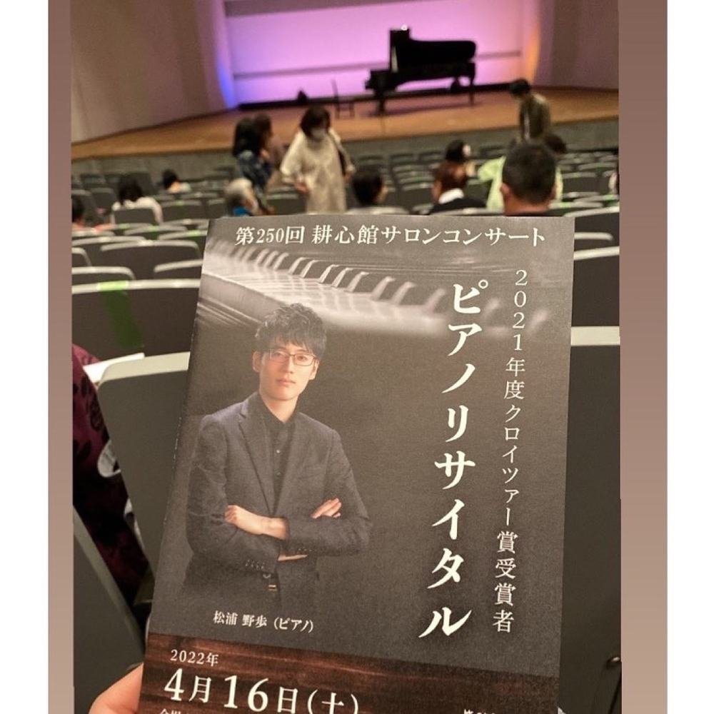
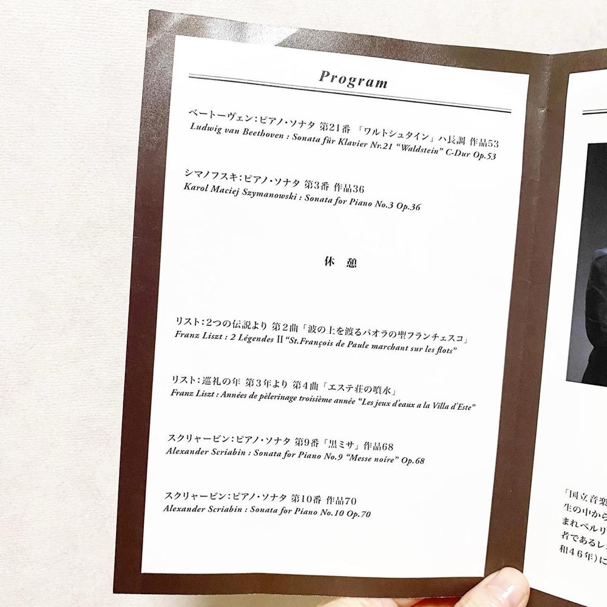
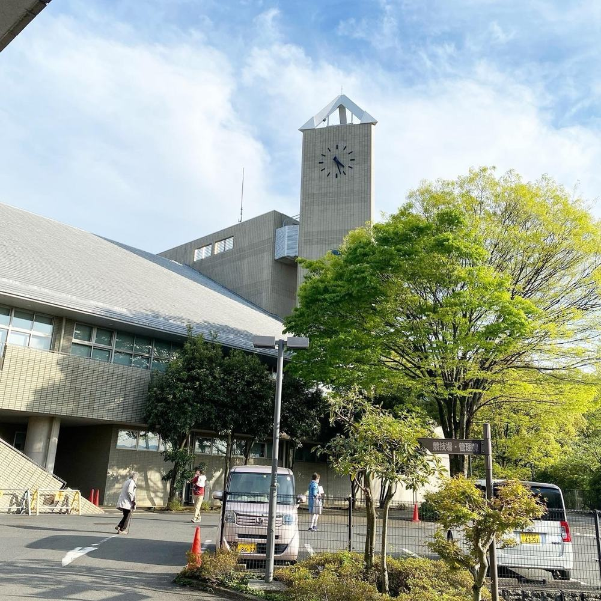
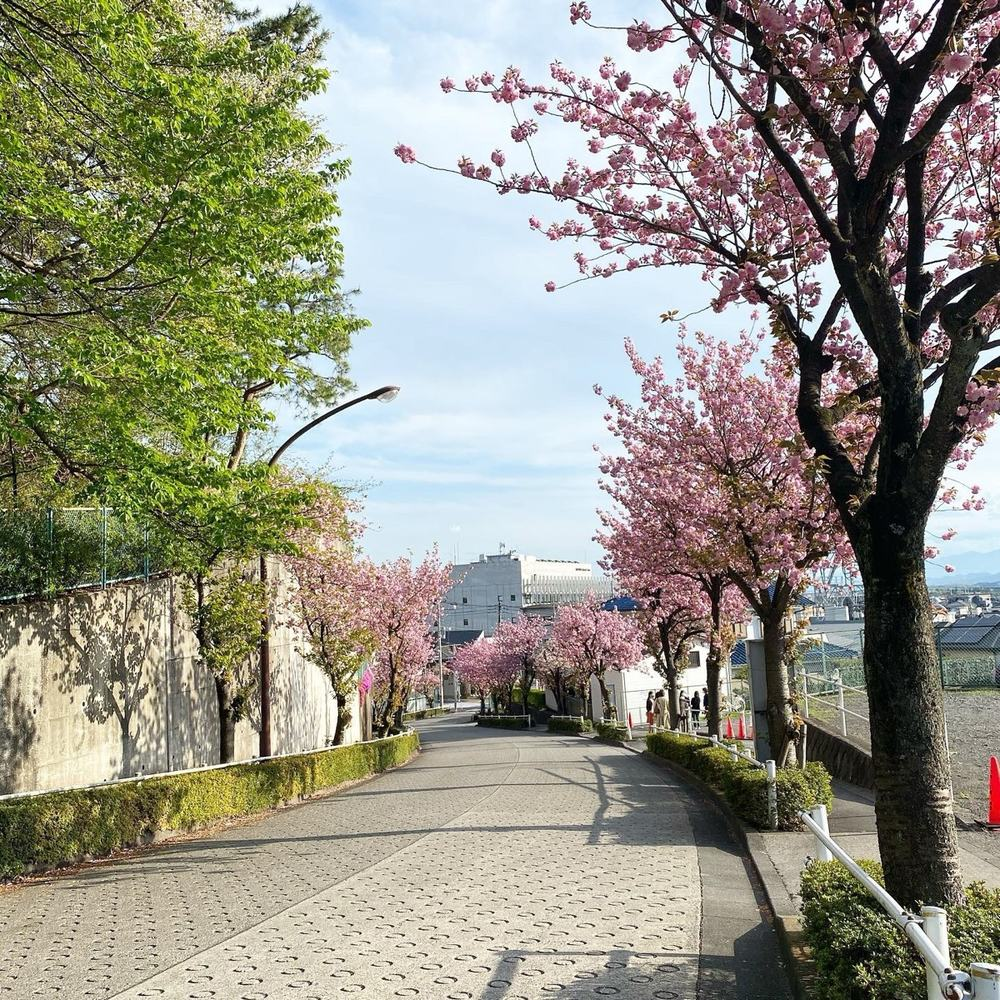
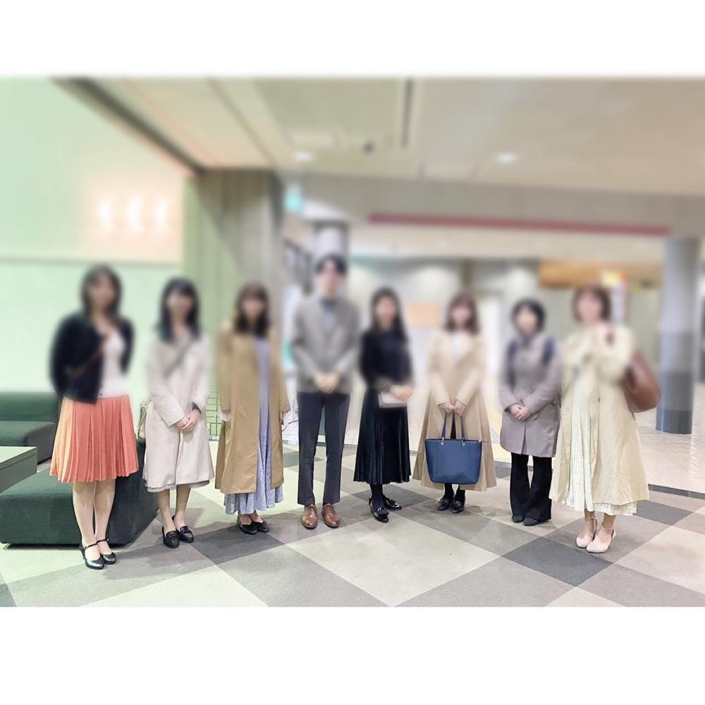

友人の演奏会でした✨👏
本日は、中学からの友人のコンサートを見に行ってきました♪
最近まで、コロナ禍のために、学内で開催される演奏会は外部の人は聞くことができずだったので、久しぶりに聴く知人の演奏でした☺️
プログラムはロマン派から近現代の作曲家のものでした。
一曲目のワルトシュタインから、力強さが伝わってきて一気に引き込まれました。
以降の作曲家の曲では、音色が多彩に表現されていて、情景や色が想像できとても綺麗でした。
近代音楽も素敵だけど、もう超越しすぎてて宇宙 という表現がふさわしい🤔かな。
のぼくんの演奏は、すごく丁寧で、だけど強く太く幅広さもあって、でも繊細でか弱くて。
パワーをもらいました。
やっぱりピアノは素敵だなあと実感😌
こういった演奏をされるまでに、どれほどの努力があったんだろうと思うと、尊敬の気持ちでいっぱいです。
私も頑張らないとな！と思った一日でした。




